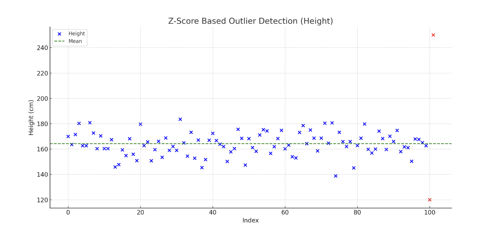

✅ Z-Score
📌 What Are Z-Score?
The Z-score (also known as standard score) tells you how many standard deviations a data point is from the mean of a dataset.
Z-Score Method (Standard Score Method)#
✅ When to Use:
-
When your data is normally distributed.
-
Works well for univariate (single variable) analysis.
📘 Formula:
-
X = individual value
-
μ = mean of the dataset
-
σ = standard deviation
-
Z = 0 → value is exactly the mean
-
Z > 0 → value is above the mean
-
Z < 0 → value is below the mean
-
Z > 3 or Z < -3 → considered an outlier (in many applications)
Z= (X−μ)/σ
-
μ = mean of the data
-
σ = standard deviation
-
Z-score > 3 or < -3 is usually considered an outlier
✅ Real-Time Example:#
Let’s say the average height of students in a class is 170 cm with a standard deviation of 5 cm. If a student is 180 cm tall:
Z=(180−170)/5 = 2
This means the student's height is 2 standard deviations above the average.
📊 Visualization:
If you plot a bell-shaped curve (normal distribution):
-
Most values lie between Z = -1 and Z = +1
-
Around 95% of data lies between Z = -2 and Z = +2
-
Extreme Z-scores (e.g., < -3 or > +3) indicate potential outliers
🧠 When to Use:
-
To detect outliers
-
To standardize different datasets
-
To compare scores from different distributions
-
In machine learning for feature scaling (standardization)
📌 Example in Code (Height):
from scipy.stats import zscore
import pandas as pd
# Load data
df = pd.read_csv("hight.csv")
df['Z_Score'] = zscore(df["Hight"])
# Identify outliers using Z-score threshold
outliers_z = df[df['Z_Score'].abs() > 3]
print("🚨 Z-Score Outliers:\n", outliers_z[['Hight', 'Z_Score']])
🚨 Z-Score Outliers: Empty DataFrame Columns: [Hight, Z_Score] Index: []

The plot above highlights outliers in red using the Z-score method:
How Outliers Are Detected:
- Z-score measures how far a value is from the mean in terms of standard deviations.
A common threshold is:
- Z > 3 or Z < -3 ⇒ considered an outlier.
📊 Example Insight:
-
Most heights cluster around the mean (green dashed line).
-
Two points far from this central cluster (e.g., 120 cm and 250 cm) are marked in red as outliers.
🔁 Mahalanobis Distance (for Multivariate Outliers)#
✅ When to Use:
-
When you have multiple features/columns (multivariate data)
-
Takes correlation between variables into account
📌 Example with Multiple Features (e.g., Height & Weight):
import pandas as pd
import numpy as np
from scipy.spatial.distance import mahalanobis
from numpy.linalg import inv
# Sample multivariate dataset
df = pd.read_csv("height_weight.csv") # assume columns: Hight, Weight
data = df[['Hight', 'Weight']]
# Mean vector & Covariance matrix
mean_vec = data.mean().values
cov_matrix = np.cov(data.T)
inv_cov_matrix = inv(cov_matrix)
# Calculate Mahalanobis distance for each point
df['Mahalanobis'] = data.apply(lambda x: mahalanobis(x, mean_vec, inv_cov_matrix), axis=1)
# Set threshold (e.g., >3 or >5 based on degrees of freedom)
threshold = 3
outliers_maha = df[df['Mahalanobis'] > threshold]
print("🚨 Mahalanobis Outliers:\n", outliers_maha[['Hight', 'Weight', 'Mahalanobis']])
🔬 Summary Table
| Method | Best For | Multivariate | Assumes Normality | Threshold |
|---|---|---|---|---|
| IQR | General use | ❌ | ❌ | 1.5×IQR |
| Z-score | Normal data | ❌ | ✅ | Z > 3 |
| Mahalanobis | Multivariate outliers | ✅ | ✅ (ideally) | D² > 3 or 5 |